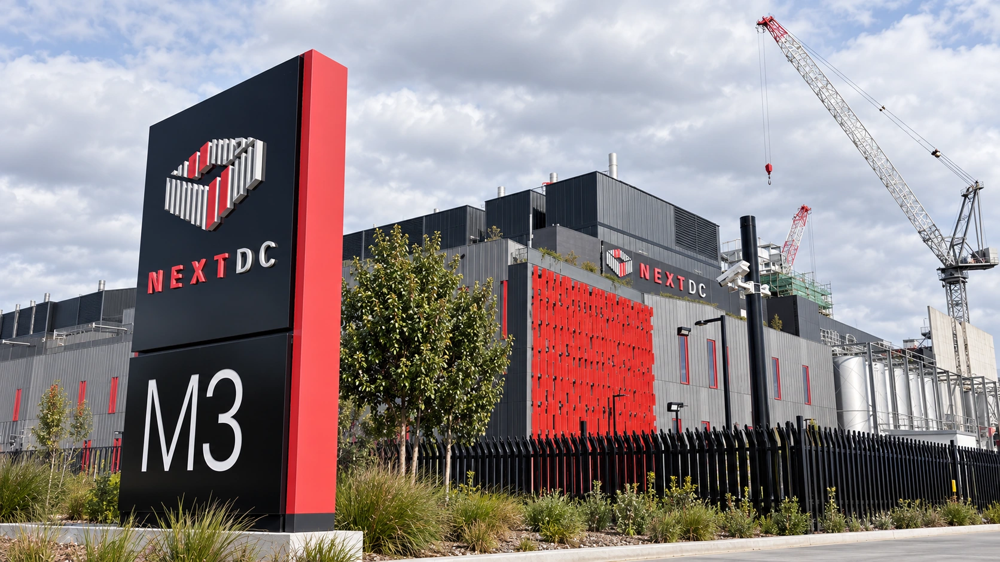

Data-Center Operator NEXTDC Cuts CEO Incentives After Melbourne Power Delay
A board shake-up follows a grid delay that disrupted NEXTDC’s revenue outlook, showing why contracted data-center demand still needs usable power.

Australian data-center operator NEXTDC says chief executive Craig Scroggie will forgo his fiscal 2027 short- and long-term incentive opportunities, with no replacement cash or other award. The October 26 board announcement follows a power-supply delay at its M3 Melbourne campus that forced a major revision to the company's revenue outlook last week.
Chairman Douglas Flynn reaffirmed that he will retire once a successor is installed and a short handover is complete. Incumbent non-executive directors agreed to an immediate 10% fee reduction. The board also withdrew proposals for a higher director-fee ceiling and the CEO's long-term incentive grant ahead of the November 20 annual meeting.
The new development is the governance response. The electricity delay and guidance cut were disclosed on October 21, not first announced Monday. That separation matters: changing pay and board succession can address accountability, but it does not deliver the electrical capacity needed to start billing customers. Our analysis of data-center power constraints explains why the connection can be as important as the building.
The gap between a contract and revenue
In its October 21 statement, NEXTDC cut fiscal 2027 net revenue guidance to A$475 million–A$500 million from A$615 million–A$640 million. The earlier outlook had included approximately A$140 million from affected M3 customer contracts. The company removed their contribution because it could no longer reliably estimate it, rather than reporting that all those contracts had disappeared.
The statement links the delay to electricity distributor Jemena's network works, with the next increase in M3 grid supply expected during fiscal 2028 on the distributor's indicative schedule. Data-hall construction continues. The outstanding issue is when contracted capacity can be powered, delivered and billed. A completed room and an agreed customer commitment do not by themselves create usable computing capacity.
That distinction is central to the wider AI infrastructure market. Demand forecasts typically describe how much computing customers want. A developer must still coordinate electrical infrastructure, permits, buildings, cooling and equipment. These inputs arrive on different schedules, and a delay in one can hold back revenue from the others even when demand has not vanished.
Local infrastructure carries financial consequences
September reporting by ABC documented residents' concerns about tall electricity poles and consultation in Melbourne's inner west. Jemena told the broadcaster it had paused works to improve engagement. That earlier reporting provides context for the local infrastructure dispute; it should not be treated as a new October 26 protest or proof that the matter has now been resolved.
For a data-center operator, a delayed revenue ramp can create a mismatch between spending and receipts. Capital goes into a facility before customers begin paying for its full capacity. As our free cash flow guide explains, the timing of investment can matter even when a company's longer-term commercial prospects remain intact.
NEXTDC's investor centre separately reports 740.1 megawatts of contracted utilization and 175 megawatts of billing utilization for fiscal 2026. These are company-reported operating measures, not interchangeable descriptions of electricity already being consumed. The gap illustrates why investors need to understand how contracted projects move into billing, rather than treating a large backlog as current revenue.
What the board changes can accomplish
The October 26 statement says the search for a new chair has expanded to include another independent non-executive director. The board wants expertise relevant to data centers, energy, infrastructure development or capital management. Appointments are expected in the first calendar quarter of 2027, subject to finding suitable candidates. It has not announced that those people are already in place.
A stronger board can scrutinize project sequencing and the assumptions supporting investment decisions. It cannot guarantee a network completion date controlled partly by external parties. That is why a change in executive incentives is best assessed alongside evidence about power delivery and the conversion of contracted capacity into receipts, not as an immediate repair of the project economics.
The next scheduled checkpoint is the annual meeting, where NEXTDC has committed to report on its capital expenditure review. For the sector, the case puts the readiness of AI infrastructure pipelines under closer scrutiny. Operation depends on delivered power and dependable schedules as well as customer appetite for computing.
Sources and methodology
Sources checked October 26, 2026. Company statements, reported findings and forecasts are attributed in the text. Financial and operational implications are editorial analysis. The generated cover is illustrative.